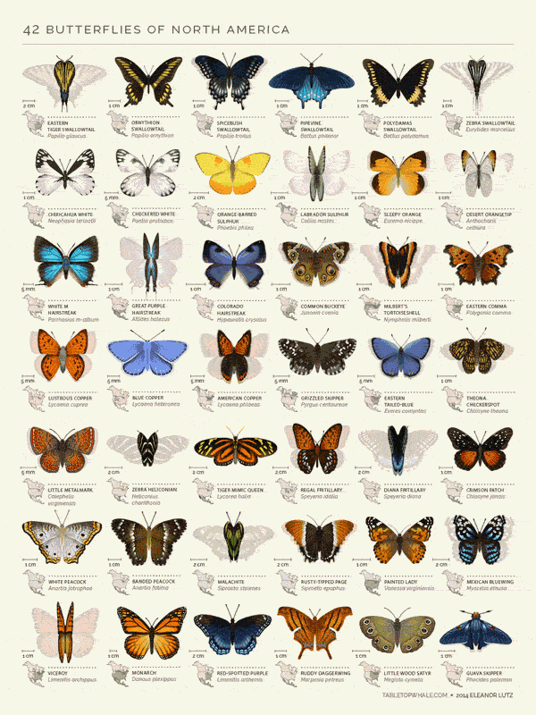

BLOG DE INTERESSESVARIADOS

Espécies de borboletas
Borboletas
Borboletas não conseguem voar se a temperatura corporal estiver abaixo ed 86 graus.
Enxergam em um raio de 360 graus, enxergam as cores vermelha, verde e amarela, porém também são capazes de enxergar uma grama de cores ultravioletas que são imperceptíveis ao olho humano.
Existem cerca de 20 mil espécies no mundo, e aproximadamente 3.500 delas vivem no Brasil.
RPG de mesa (Cellbit)
ORDEM PARANORMAL
Um RPG de mesa criado pelo streammer Cellbit que conta a história de um mundo onde criaturas de um local obscuro são trazidos à nossa realidade. O mundo está perto do fim e os integrantes da Ordo Calamitas devem evitar que ele chegue, combatendo o paranormal.
Mitos e crenças
Mitologia e Crenças
Conhecer diversas histórias e pontos de vista me encantam facilmente, na antiguidade muita coisa era justificada através do que o povo acreditava.
Algumas que eu amo: